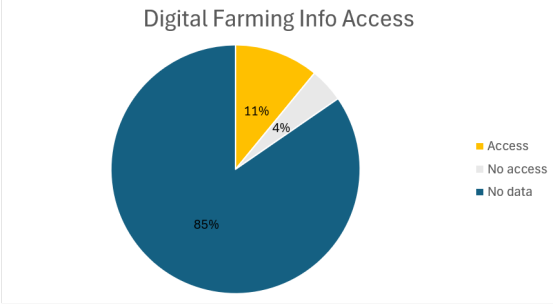

Nigeria GHS-Panel Wave 5

Data Source:Nigeria GHS(General Household Survey) Panel wave5- NBS/World Bank LSMS -ISA
Goals:To find out what share of Nigerian farming households have access to digital farming information,and what households spend most of their money on.
Descriptions:Worked with the Nigeria GHS-Panel Wave 5 dataset.The Agriculture sector covered 1,861 househoolds,I identifie the farming households 1,527 and counted how many of them reported receiving digital farming informationan.
Tools:Excel(IF formula to flag farminghouseholds,COUNTIFS to count),Power Query, Power BI.
Result: Of the 1,527 farming households: